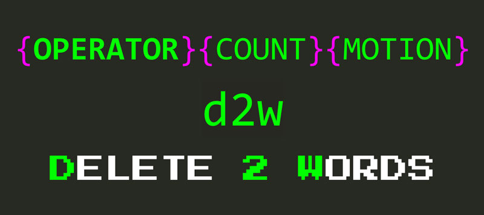

Edición mágica con operadores de VIM
El movimiento no es solo para moverse. Se puede usar en combinación con una serie de comandos llamados operadores para editar tu código a la velocidad del rayo.
Puedes usar operadores y movimientos juntos siguiendo cualquiera de estos patrones:
{operador}{cuenta}{movimiento}
{cuenta}{operador}{movimiento}

- El operador determina qué acción se desea realizar: eliminar, cambiar, tirar (yank), formatear, etc.
- La cuenta te permite multiplicar el efecto de un operador mediante la realización de una acción cuenta número de veces.
- El movimiento representa el fragmento de texto al que aplicar la acción definida por el operador.
Por ejemplo, la combinación d2w te permite eliminar dos palabras.

d corresponde al operador de eliminación. Como d es un operador, puede seguir la fórmula {operator}{count}{motion} y combinarla con todos los movimientos que has aprendido hasta ahora:
- Usa
d5jpara eliminar 5 líneas hacia abajo - Escribe
df'para eliminar todo en la línea actual del cursor hasta la primera aparición del carácter'(incluido el propio carácter) - O escribe
dt'para hacer como el ejemplo anterior pero excluyendo el carácter (hasta o justo antes del carácter') - Usa
d/hellopara eliminar todo hasta la primera aparición dehello - Escribe
ggdGpara borrar un documento completo
Operadores útiles

Además de d, hay un puñado más de operadores útiles:
c(change): Change elimina un trozo de texto y luego establece el modo de inserción para que se pueda seguir escribiendo, cambiando el texto original por otra cosa. El operador de cambio es como los comandosdeicombinados en uno. Esta dualidad lo convierte en un operador más útil.y(yank): copiar en la jerga de VIMp(put/**puaste): pegar en la jerga de VIMg~(mayúscula): cambia las letras de minúsculas a mayúsculas y viceversa. Alternativamente, usagupara convertir algo en minúsculas ygUpara convertir algo en mayúsculas>(desplazamiento a la derecha): agrega sangría<(desplazamiento a la izquierda): elimina la sangría=(código de formato): código de formatos
Puedes usar estos operadores de la misma manera que usaste delete para:
c/hellocambia todo hasta la primera aparición dehello.ggyGcopia un documento completogUwcapitaliza una palabra
Sintaxis abreviada de operador
Todos estos operadores proporcionan una sintaxis abreviada adicional destinada a ahorrarte mecanografía y aumentar tu velocidad con tareas de edición comunes:
- Duplica un operador para que funcione en una línea completa:
ddelimina una línea completa,cccambia una línea completa, etc. - Capitaliza un operador para que realice una versión más fuerte (o alternativa) de su comportamiento predeterminado :
Delimina del cursor al final de la línea,Ccambia al final de una línea,Ycomoyycopia una línea completa,Ppega algo antes del cursor, etc.
¿Notaste cómo las teclas de comando tienen mucho sentido?
Los operadores, movimientos y otros comandos en VIM son generalmente fáciles de aprender porque tienen sentido y son fáciles de adivinar. ¿Quieres cambiar algo? Es posible que desees utilizar el c (operador cambiar). ¿Quieres moverte palabra por palabra? Prueba w(word). ¿Quieres borrar algo? Prueba el operador d (delete) y así sucesivamente.
Los operadores realmente brillan cuando los combinamos con una clase especial de movimientos llamados objetos de texto.
Tomando la edición de una muesca con objetos de texto
Los objetos de texto son fragmentos de texto estructurados o, si lo deseas, las entidades de un modelo de dominio de documentos. ¿De qué está compuesto un documento? Palabras, oraciones, texto citado, párrafos, bloques, etiquetas (HTML), etc. Estos son objetos de texto.
La forma de especificar un objeto de texto dentro de un comando es combinando la letra a (un objeto de texto más espacios en blanco) o i (objeto interno sin espacios en blanco) con un carácter que representa un objeto de texto en sí:
{operator}{a|i}{text-object}
Los objetos de texto incorporados son:
wpara wordspara sentence',", ``` para las cotizacionesppara paragraphb(o(,)) para el bloque rodeado por(),B(o{,}) para el bloque rodeado por{}<,>por un bloque rodeado de<>[,]por un bloque rodeado de[]tpara etiqueta.
Entonces, para eliminar diferentes fragmentos de texto, puedes usar cualquiera de los siguientes comandos:
dawa delete un word (más espacios en blanco finales)ciwa change inner worddasa delete un sentence (dispara eliminar frase interno)da"a algo de eliminación entre comillas dobles incluyendo las cotizaciones a sí mismos (di"elimina sólo el contenido iNside las cotizaciones de repuestos y las comillas)ci"cambiar algo entre comillas doblesdappara eliminar un párrafodabda(oda)para eliminar un bloque rodeado de(daBda{oda}para eliminar un bloque rodeado de{dateliminar una etiqueta HTMLcitpara cambiar el contenido de una etiqueta HTML
Combinar objetos de texto con operadores es extremadamente poderoso y se encontrará confiando en ellos con mucha frecuencia. Cosas como cit, ci"y cib son simplemente geniales.
Digamos que queremos cambiar el contenido de esta cadena a continuación por otra cosa:
const salute = 'I salute you oh Mighty Warrior'
Escribes ci'Hi! y se convierte en:
const salute = 'Hi!'
Así. No necesitas agarrar el ratón, seleccionar el texto y luego escribir otra cosa. Escribe tres letras y ¡Boom! Ya terminaste.
¿Notaste cómo se colocan la mayoría de las teclas vim cerca de tus dedos?
El hecho de que VIM tenga modos permite reutilizar las teclas cerca de la fila de inicio en cada modo separado. Esta decisión de diseño minimiza la necesidad de combinaciones de teclas lentas y retorcidas, y aumenta su velocidad y la longevidad de sus dedos y muñecas. ¡Esto es asombroso!
Repetir el último cambio con el operador punto
VIM tiene otro truco en la trastienda para ti destinado a guardar más pulsaciones de teclas: el comando mágico . (punto).
El comando . te permite repetir el último cambio que realizaste. Imagina que ejecutas dd para eliminar una línea de código. Y ahora digamos que te has calentado y quieres eliminar aún más código. Eliminar el código es bueno, cuanto menos código tengas, menos código necesitas mantener. Así que, eliminemos otra línea de código. ¿Cómo harías eso? Podrías volver a escribir dd pero, aún mejor, podrías usar el comando . que es solo una pulsación de tecla.
OK. Guarda una pulsación de tecla. Y qué. (Mucho público veo aquí). Bueno, puedes usar el comando . para repetir cualquier tipo de cambio, no solo un solo comando abreviado como dd. Por ejemplo, podría cambiar una palabra por Awesome así cawAwesome, y luego repetir todo el comando con todas esas pulsaciones de teclas simplemente escribiendo un solo punto. ¡Piensa en las posibilidades!
El . comando se vuelve aún más útil si tienes la costumbre de usar objetos de texto. Los objetos de texto son más confiables que otros movimientos porque no importa tanto dónde está ubicado el cursor. Por lo tanto, los comandos con objetos de texto son mucho más repetibles y, por lo tanto, funcionan maravillosamente en conjunto con el comando ..
El comando . funciona muy bien en combinación con los comandos de búsqueda de repetición ( ;, ,, n o N). Imagina que deseas eliminar todas las apariciones de cucumber. Un posible enfoque sería buscar el pepino /cucumber, eliminarlo con daw y, a partir de ese momento, usar n para ir a la siguiente y . para eliminarlo. ¡Dos pulsaciones de teclas! De nuevo piensa en las posibilidades.
Más comandos de edición de texto abreviado
Además de los operadores que aprendiste en este capítulo, VIM ofrece una serie de atajos para operar con caracteres individuales que pueden ser útiles en ocasiones. Son:
xes equivalentedly elimina el carácter debajo del cursorXes equivalentedhy elimina el carácter antes del cursorses equivalente ach, elimina el carácter debajo del cursor y lo pone en modo Insertar~para cambiar a mayúsculas/minúsculas un carácter
Como de costumbre, todo el soporte anterior cuenta para operar en varios caracteres a la vez.
Deshacer y rehacer
Tarde o temprano llegará un momento en que cometerás un error. ¡Admítelo! No eres perfecto. Nadie lo es. Y eso está bien. Sin embargo, no debes preocuparte, porque VIM te respalda:
- Escribe
uy desharás tu último cambio, - Escribe
CTRL-Ry lo reharás,
Pheeewww ...
Resumen
Los movimientos no son solo para moverse. Utilizados en combinación con operadores, te permiten realizar operaciones en texto con facilidad y una velocidad sorprendente . Aplica un operador en un movimiento utilizando la melodía clave {operator}{motion}.
Algunos de los operadores más útiles y comunes son: d para delete, c para change, y para yank (copiar) y p para put (pegar). Como puedes apreciar de estos operadores y los movimientos que has aprendido hasta ahora, los comandos de VIM son generalmente fáciles de aprender porque tienen sentido y son fáciles de adivinar.
Cuando se duplica un operador, se le hace operar sobre una línea . Por ejemplo, puedes usar dd para eliminar una línea completa. De manera similar, cuando se usa un comando en mayúsculas, se ejecuta una versión más fuerte (o alternativa) del comando original. Por ejemplo, D elimina del cursor al final de una línea. Esto es realmente útil y pueden ahorrarte mucho tiempo. Aprende a usarlos en lugar de sus alternativas más verbales.
Las cuentas también funcionan con operadores. Se puede multiplicar el efecto de un movimiento combinado de operación, utilizando una cuenta de la siguiente manera: {operator}{count}{motion}.
Los objetos de texto tienen movimientos especiales que describen las partes de un documento: palabras, oraciones, párrafos y demás. Son increíblemente útiles en combinación con los operadores de VIM.
Usando operadores con objetos de texto se puede ser muy preciso y ordenarle a VIM que elimine una palabra o cambie el interior de una cadena o bloque de código .
Los objetos de texto ofrecen dos variantes: a (piensa en a como all) e i (piensa en inner) que te permite operar en un objeto de texto más el espacio en blanco circundante o solo en las partes internas de un objeto de texto, respectivamente. Por ejemplo, el uso da" elimina una cita completa que incluye espacios en blanco al final, usando di" solo elimina lo que esté rodeado de comillas.
El comando punto te . permite repetir el último cambio y, como tal, es uno de los comandos repetidores más útiles. Las operaciones en objetos de texto son excelentes candidatos para el operador de punto porque son más repetibles .
Una excelente manera de aprovechar el comando punto es usarlo en combinación con búsquedas . Cuando lo hagas, puedes aplicar cambios de búsquedas sucesivas con solo dos pulsaciones de teclas: n o ; para encontrar la siguiente coincidencia y . repetir el último cambio.
A veces cometerás un error. Cuando eso sucede, puedes deshacer el último cambio con el comando u . Si cambias de opinión o deshaces demasiado, escribe CTRL-R para redo.